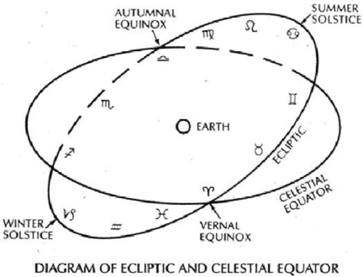
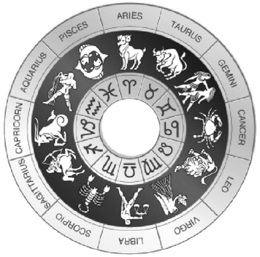

Astrology is an ancient science that describes the influence of the planets on events of nature and behaviour of mankind. This ancient science is rooted in thousands of years of observation across many civilizations.
• The ancient Sumerians, Akkadians and Babylonians between the 4th and 2nd centuries BC believed the affairs of mankind could be gauged by watching the motions of the stars and planets. They recorded their predictions and future indications of prosperity and calamity on clay tablets. These early recordings form the very foundations of modern day astrology.
• Ancient Egyptian artifacts show that high priests Petosiris and Necepso who lived during the reign of Ramses II were revered for their knowledge of astrology. The Egyptian culture is also thought to have developed a 12 month x 30 day recordation method for time based on the repeated appearances of constellations.
• Ancient Indian and Chinese artifacts reveal that astrology has held an esteemed place in those societies for many thousands of years.
• Hipparchus, Pythagoras and Plato are revered names from the Greek era. Historians think Pythagoras may have assigned mathematical values to the relations between celestial bodies and Plato may have offered up predictions relating celestial bodies to human fates. Hipparchus is thought to have compiled a star catalogue and in so doing was the first to popularize astrology.
• During Roman times, astrology and divination were used for political gain with important military figures surrounding themselves with seers and diviners. Ptolemy and Valens stand out from the time of the Roman Empire as writers on astrology. In 126 AD, Ptolemy penned four books on the influence of the stars which collectively are called the Tetrabiblos. In 160 AD, Valens penned Anthologies in which he further summarized the principles of astrology.
But, following the conversion of Emperor Constantine to Christianity, in 312 AD, divination and magic became a crime according to the Church and astrology began a slow retreat to the sidelines where for the most part it remains today. However, despite this sidelining by a Church seeking to protect its authority, astrology has been used in more modern history by leading thinkers such as Galilei Galileo, Tycho Brahe, Nostradamus, Johannes Kepler, Sir Francis Bacon, Isaac Newton and Benjamin Franklin. Indeed we owe much of our current state of scientific advancement to these brave souls who refused to let astrology fade away and become a distant memory.
The Zodiac
In our solar system, the Sun is at the center. The Earth, Moon, planets and various other asteroid bodies all collectively comprise our planetary system. The various planets and other asteroid bodies rotate the 360 degrees around the Sun following a path called the ecliptic plane. Picture a gigantic band that encircles the 360 degrees of the planetary system. Divide this band into twelve equal portions of 30 degrees each and the result is what astrologers call the zodiac. The twelve portions of the zodiac all have names including Aries, Cancer, Leo and so on. If these names sound familiar, they should. You routinely see all twelve names in the daily horoscope section of your morning newspaper. The starting point or zero degree point of the zodiac sign Aries is deemed to be at the Spring Equinox of each year as shown in Figure 1-1.

Figure 1-1 The Ecliptic
Geocentric and Heliocentric Astrology
Astrology comes in two distinct varieties—geocentric and heliocentric. In geocentric astrology, the Earth is taken to be the vantage point for observing the planets as they pass through the signs of the zodiac. Owing to the different times for the various planets to each orbit the Sun, from an astrologer’s vantage point on Earth, it appears as though from time to time certain planets make distinct angles (called aspects) with one another and also with the Sun. The aspects that are commonly used in astrology are 0, 30, 45, 60, 90, 120, 150 and 180 degrees.
In heliocentric astrology, the Sun is taken to be the vantage point and to an observer positioned on the Sun, it likewise appears as though various planets are making angles with other planets from time to time.
I use both types of astrology to compliment my trading activity, but I do find I am slowly developing a preference for the heliocentric variety. This may be because it is a bit cleaner than the geocentric method, for heliocentric astrology does not worry about features such as Ascendant, Descendant, MC and IC. Most of the examples you will see throughout this book are based on geocentric astrology, but you will also see how heliocentric astrology plays a role in trading the markets too, especially when it comes to commodity futures. After reading this book, I encourage you to take a look at both methods. Like me, you will probably find that you start to develop a preference for one method over the other.
Ascendant, Descendant, MC and IC
As the Earth rotates on its axis once in every 24 hours, an observer situated on Earth will detect an apparent motion of the zodiac. Astrologers further apply four cardinal points to the zodiac, almost like the north, south, east and west points on a compass. The east point is termed the ascendant and is often abbreviated Asc. The west point is termed the descendant and is often abbreviated Dsc. The south point is termed the Mid-Heaven (from the Latin Medium Coeli) and is often abbreviated MC. The north point is termed the Imum Coeli (Latin for bottom of the sky) and is abbreviated IC. These cardinal points are often used when applying astrology to the markets. For example, when the New York Stock Exchange officially opened for business on May 17, 1792, it had its ascendant in Cancer, its MC in Aries, its Descendant in Capricorn and its IC in Libra.
Mythology and Meanings
Throughout history, various stories and characteristic behaviours have been assigned to the 12 signs of the zodiac. The diagram in Figure 1-2 provides a visual rendering of the 12 signs and the traditional imagery that relates to each sign. What then follows is an amusing bit of mythology for each sign.

Figure 1-2 The Zodiac Signs
Aries (0 to 30 degrees, 21 March-20 April)
According to Greek mythology, Nephele, the mother of Phrixus and Helles, gave her sons a ram with a golden fleece. To escape their evil stepmother, Hera, the sons mounted the ram and fled. When they reached the sea, Helles fell into the water and perished. Phrixus survived the ordeal, the ram’s fleece was dedicated to Zeus who then raised the ram into the heavens and made it a constellation.
Taurus (30 to 60 degrees, 21 April-21 May)
According to Roman legend, Jupiter took the form of a bull and became infatuated with the fair maiden Europa. When Europa decided to ride the bull, he rushed into the sea and whisked Europa off to Crete. Jupiter then raised the bull into the heavens where it became a star.
Gemini (60 to 90 degrees, 22 May-21 June)
In Greek mythology, the twins are considered to be Hercules and Apollo. In Roman legend, the twins are said to be Castor and Pollux, the twin sons of Leda. Pollux was the son of Zeus, who seduced Leda, while Castor was the son of Tyndareus, king of Sparta and Leda’s husband. When Castor died, Pollux begged his father Zeus to give Castor immortality, and he did, by uniting them together in the heavens.
Cancer (90 to 120 degrees, 22 June-23 July)
Roman legend says that Cancer is the crab that bit Hercules during his fight with the Hydra and it was placed in the heavens as a star by Juno, the enemy of Hercules.
Leo (120 to 150 degrees, 24 July-23 August)
Legend says that Hercules battled with the Nemean lion and won. Zeus raised the lion to the heavens and made it into a star.
Virgo (150 to 180 degrees, 24 August-23 September)
Legend has it that Virgo is a constellation modelled after Justitia, daughter of Astraeus and Ancora, who lived before man sinned. After man sinned, Justitia returned to the heavens.
Libra (180 to 210 degrees, 24 September-23 October)
Libra was known in Babylonian astronomy as scales that were held sacred to the sun god Shamash, who was also the patron of truth and justice. In Roman mythology, Libra is considered to depict the scales held by Astraea, the goddess of justice.
Scorpio (210 to 240 degrees, 24 October-22 November)
According to Greek mythology, Orion boasted to Diana and Latona that he could kill every animal on Earth. So they sent for a scorpion which stung Orion to death. Jupiter then raised the scorpion to the heavens.
Sagittarius (240 to 270 degrees, 23 November-22 December)
In Babylonian legend, Sagittarius was the God of War. In Greek legend, Sagittarius is denoted as a centaur (half man, half horse) in the act of shooting an arrow. In Roman legend, Sagittarius was a centaur who killed himself when he accidently dropped one of Hercules’ poisoned arrows on his hoof.
Capricorn (270 to 300 degrees, 23 December-20 January)
In Greek legend, during the war with the giants, the Greek Gods were driven into Egypt. In order to escape the wrath of the encroaching giants, each Greek God changed his shape. The God Pan leapt into the river Nile and turned the upper part of his body into a goat and the lower part into a fish, a combination deemed worthy by Jupiter who raised him to the heavens.
Aquarius (300 to 330 degrees, 21 January-19 February)
According to legend, Deucalion the son of Prometheus was raised to the heavens after surviving the great deluge that flooded the world.
Pisces (330 to 360 degrees, 20 February-20 March)
In Greek legend, Aphrodite and Eros were surprised by Typhon while playing along the river Nile. They jumped into the water and were changed into two fishes.
As we can see, astrology dates back many millennia. Ancient societies correlated their events and future activities to the planets. Modern society, however, has put astrology on the back burner. But, slowly, traders and investors are starting to accept it again.
Now, let’s see how lunar astrology can be used as a tool to trade and invest in the markets.